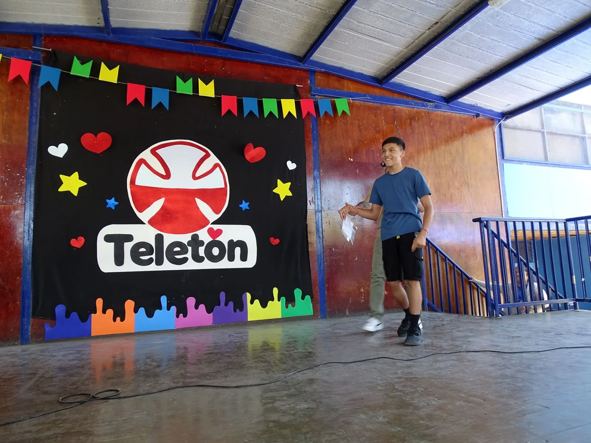

Escuela Las Canteras recauda más de $1,9 millones en emotiva jornada por la Teletón 2026
La comunidad educativa reunió $1.919.390 en una jornada de solidaridad, arte y el conmovedor testimonio del exalumno Juan Pablo Figueroa Vargas.

Juan Pablo Figueroa Vargas durante la jornada de la Teletón 2026.
Con alegría y espíritu solidario, la Escuela Las Canteras cerró su campaña Teletón 2026 tras un mes de actividades de recaudación realizadas durante octubre, alcanzando un total de $1.919.390.
La ceremonia fue animada por Tamara Contreras y el subdirector Jonathan Mundaca, y contó con la presencia de la directora provincial de Educación de Copiapó, Carol Pizarro; el director del establecimiento, Diego Araya Fuentes; estudiantes, familias, docentes, asistentes de la educación e invitados.
Una comunidad unida por la solidaridad
La jornada contó con el mago Artemis, el cantante Alberto García, «El Ranchero», la agrupación folclórica Alama, Corazón y Cueca y la visita de Teletín, quien compartió juegos y bailes con los estudiantes.
Representantes de todos los cursos, desde educación parvularia hasta octavo básico, entregaron simbólicamente los fondos reunidos durante octubre y recibieron reconocimientos por su compromiso.
Galería de aportes por curso. Selecciona una fotografía para ampliarla.
El equipo PIE, representado por Nataly Gallardo, Lastry Yáñez y Natalia Moroso, estuvo a cargo del Banco de la Teletón escolar. En paralelo, Pablo Choque, encargado de Convivencia Escolar, animó e interactuó con el público. Una pelota firmada por el plantel de Deportes Copiapó fue subastada por $40.000.
Juan Pablo Figueroa: una historia que emocionó a Las Canteras
Uno de los momentos más significativos fue el regreso de Juan Pablo Figueroa Vargas, exalumno del establecimiento y usuario de Teletón desde hace 15 años. Recordó con cariño a sus profesores, asistentes de la educación y profesionales del PIE, y compartió los avances que ha logrado en su movilidad y autonomía.
«Ahora ya no soy tan pequeño, ahora ya no ando en silla de ruedas. Sigo usando el carro ruidoso de siempre. Ya voy por los bastones».
Su regreso caminando al escenario reflejó la importancia del acompañamiento y la inclusión. «Al igual que Teletón, creyeron en mí y no me cerraron las puertas para yo poder aprender y conocer. Muchas gracias por tanto», expresó.
Una recaudación construida entre todos
El subdirector Jonathan Mundaca destacó el compromiso de toda la comunidad: «Yo creo que este tipo de instancia nos une como comunidad educativa. Yo creo que eso es lo que yo más valoro».
La Escuela Las Canteras agradece a estudiantes, familias, docentes, asistentes de la educación, equipos de apoyo, artistas invitados y a todas las personas que participaron.
Más allá del resultado económico, esta campaña recordó que la solidaridad, la inclusión y el trabajo conjunto son valores que se aprenden y se viven en comunidad.
Las Canteras entrega su aporte en la Plaza de Armas de Copiapó
La mañana del sábado 7 de noviembre de 2026, una delegación de la Escuela Las Canteras participó en el escenario oficial de la Teletón, instalado en la Plaza de Armas de Copiapó, para entregar una donación final de $1.946.530.
La delegación estuvo integrada por el subdirector Jonathan Mundaca, la profesora de Matemática Mylena Arcos, la profesora de Inglés Carolina Strittmatter, la coordinadora del Programa de Integración Escolar (PIE) Nataly Gallardo, las asistentes Liliana y Gabriela y un grupo de estudiantes en representación del establecimiento. El aporte superó en más de tres veces los $550.000 reunidos en 2025.
Revive el cierre de la jornada solidaria
Registro audiovisual del anuncio del cómputo al término de la actividad en la escuela.